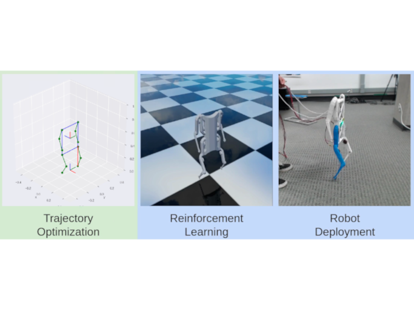

Yuni Fuchioka
渕岡湧仁
yunifuchioka@gmail.com
I am a PhD student at the ETH Zürich Robotic Systems Lab, supervised by Prof. Marco Hutter and Prof. Michiel van de Panne. My research interests include teleoperation, contact-rich (loco) manipulation, and robust field deployment for legged mobile manipulators. In terms of algorithms, I am interested in incorporating underlying physics and control theory principles within reinforcement learning based techniques. I wish to some day create robots that can be used for practical disaster response scenarios.
I received a Master's in Computer Science at the University of British Columbia under the supervision of Professor Michiel van de Panne, where I did research on reinforcement learning for quadruped robots. I did my undergraduate in Engineering Physics, also at the University of British Columbia. I have done internships at the Honda Research Institute/Honda R&D Humanoid Robotics Group, and at OMRON SINIC X, both in Tokyo Japan.
CV / Email / LinkedIn / GitHub / Twitter
Research
-
ALMA Teloperation System for the Advanced Industrial Robotic Applications (AIRA) Challenge.
Unpublished, available as a Youtube Video -
Robotic Object Insertion with a Soft Wrist through Sim-to-Real Privileged Training.
Yuni Fuchioka, Cristian C. Beltran-Hernandez, Hai Nguyen, and Masashi Hamaya.
International Conference on Intelligent Robots and Systems (IROS), 2024 -
 An Electromagnetism-Inspired Method for Estimating In-Grasp Torque from Visuotactile Sensors.
An Electromagnetism-Inspired Method for Estimating In-Grasp Torque from Visuotactile Sensors.
Yuni Fuchioka, Masashi Hamaya.
International Conference on Robotics and Automation (ICRA), 2024 -
OPT-Mimic: Imitation of Optimized Trajectories for Dynamic Quadruped Behaviors.
Yuni Fuchioka, Zhaoming Xie, Michiel van de Panne.
International Conference on Robotics and Automation (ICRA), 2023
Robots
-
ALMA Quadruped Manipulator
The ETH Zürich Robotic System Lab's Articulated Locomotion and MAnipulation (ALMA) robot consists of an ANYbotics ANYmal D quadruped, with the in-house developed DynaArm 6DOF robot arm mounted on top. Unlike the other robots on this list, I did not build this robot myself. Instead, it is the culmination of several years of hardware development in the lab, whereas developing the software and controls for it is the main focus of my PhD. -
Open Dynamic Robot Initiative (ODRI) Solo 8 Quadruped
As part of my Master's, I built the Solo 8 robot designed by ODRI, the first in-house quadruped robot in my lab at UBC. This involved sourcing components from 20 different suppliers from 6 countries, physically assembling the robot according to ODRI's instructions, and writing the software infrastructure to enable testing of custom controllers. -
 Bicopter Drone
Bicopter Drone
As a personal hobby project, I designed and built a radio controlled drone that flies using only two propellers. Rather than using an off-the-shelf flight controller, I wrote my own PD controller using an Arduino and a cheap IMU. The body was made out of balsa wood since I had limited access to fabrication tools. -
Autonomous Robot Competition
I designed and built an autonomous robot within a 4-member team, for a course project/competition. I did much of the mechanical design for the robot, which was built mostly with laser-cut and glued hardboard. The robot was able to complete all of the required competition tasks and placed 4th out of 16 teams.
Personal
- My family is Japanese, but I was born and raised outside of Japan. I received all of my education in English, in the US and Canada. I consider Vancouver to be my hometown.
- I speak Japanese fluently—I use it exclusively to communicate with my parents, and I have lived in Tokyo (mostly) without people noticing that I grew up overseas. However, my handwriting skills are quite poor due to my lack of formal education in the language.
- Outside of robotics, I love to play, listen to, transcribe, and compose music. I have played trombone in various classical and jazz ensembles since 2007. Back in Vancouver I used to play with the South Van Big Band and the Hudson Street Jazz Orchestra.